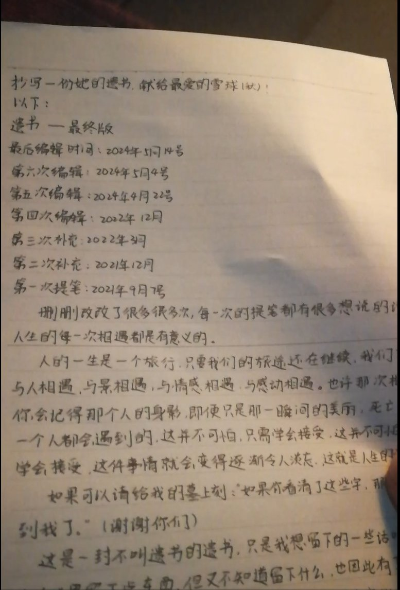

雪秋小可爱
@XUEQIUxka
翻推文刷到了，谢谢你还记得我，当时也确实不是故意要骗大家的

你不可爱
@mnib65836284
本来想着高考结束就干的，拖到了现在。。。
其实高考前就开始抄了，没什么时间就抄了好久好久
奇怪的是有几片烧完之后字迹还能看得清，就是小了点，是想给我留下吗
有一点点错误顺便帮她改了，不过也只有她能看到了
另外不要在底下说扫兴的话，我不关心什么真相
顺便@XUEQIUxka @QianYue_XQ https://t.co/lvwtLH93By